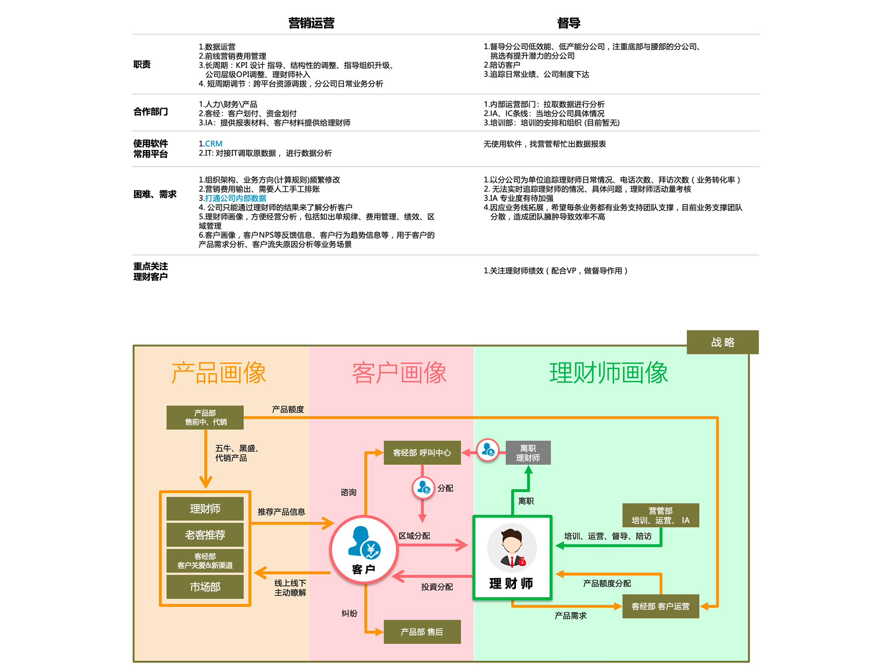
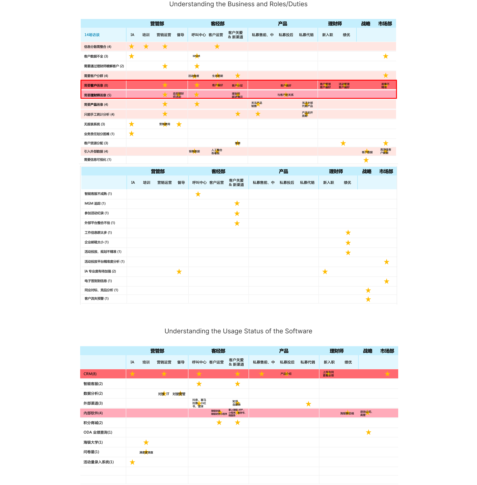
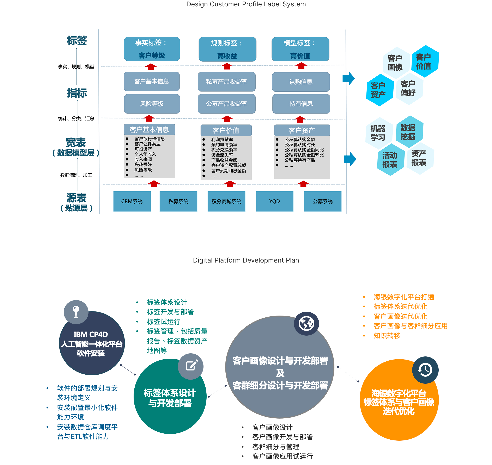

Haiyin Wealth
Digital Transformation
Accelerating business innovation through the IBM Garage methodology, building a robust data center to enhance customer insights and core competitiveness.
My Role
Facilitator (DTW), Business Requirement Analyst, Customer Persona Architect
Project Scope
WealthTech Transformation, Data Center Infrastructure, Customer Labeling System (MVP)
Phase 1: Deep Dive into Business Needs
The project began with extensive interviews across 9 key departments, including Marketing, Call Center, Strategic Planning, and IT. This phase focused on understanding the stakeholder ecosystem and identifying data-related friction points in existing operational platforms.

- Data Integration: Consolidating scattered records from CRM, OA, and Call Center systems.
- External Data: Introducing third-party data to fill gaps in customer preferences and assets.
- Visualization: Providing a data-driven "Command Center" for business experts.
Phase 2: Design Thinking Workshop
We facilitated a Design Thinking Workshop (DTW) to bridge the gap between business needs and IT capabilities. Through "As-Is" and "To-Be" journey mapping, we pinpointed the inefficiency in manual data extraction and defined the blueprint for the Customer Persona System.

Business experts had to request complex IT development across multiple systems, leading to stagnant data cycles.
A simplified architecture where business users can self-serve data through BI tools and a unified label system.
Phase 3: MVP Development & Labeling
Following the workshop, we prioritized the Customer Persona Labeling System as the first MVP. We transformed raw source tables into wide tables, defining indicators and labels that capture customer assets, transaction behaviors, and redemption habits.

- Data Cleansing: Aligning internal records with external data sources.
- Label Hierarchy: Categorizing customers by preference, behavior, and asset structures.
- Functional Delivery: Launching a visualization platform for real-time customer segmentation.